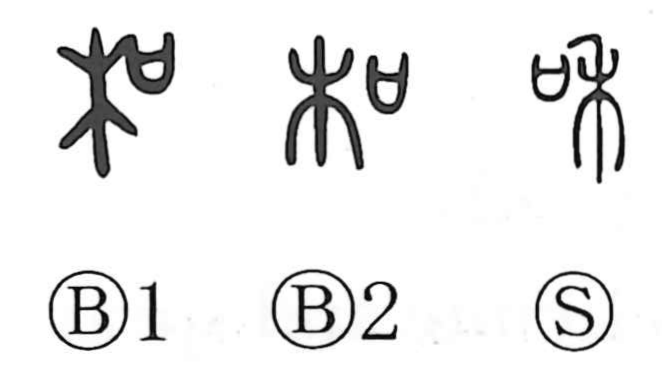

Explanation
和 combines 禾, here a great marker at a military gate, with 口, a vessel holding written pledges. Large posts shaped like 禾 originally marked the entrance; later descriptions place banners at its two sides.
An agreement was sworn before this gate. The prayer vessel identifies the covenant through which hostilities were settled, giving peace-making and friendly relations. From this come gentleness, calm, concord, and mutual accommodation.
Musical harmony belongs to the related 龢, which contains 龠, pipes sounding together. 和 later serves for that word as well, extending to voices or flavours in agreement. The military covenant and the musical accord reach a shared meaning through their connected words, while preserving distinct graphic beginnings.